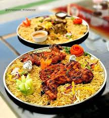

Myself Manush Kumar I am from India and I have completed my Bachlors from Gokaraju Rangaraju Institute of Engineering and Technology in Tecnical background and I'm very much intrsted in coding, since my education I always wanted be a software developer in a top MNC's. To fullfill my dream I had to wait for all these 13years. I am very much intrested in java programming so, I had to select Applied Computer Science as my major. Basically I am an "Ambivert" and I like to intract with new people. I am a Sport person I like to spend 2-3hours a day on badminton and vollyball, cricket which is a stressbuster for me.
Mandi is a traditional dish originated from Yemen, consisting mainly of meat and rice with a special blend of spices. It is cooked in a pit underground. It's extremely popular and prevalent in most areas of the Arabian Peninsula. Also in countries like Egypt and others. Currently in Past few years In Hyderabad, Mandi has become a huge trend. People loved the concept and understood the Dish how it is, But mainly pure Hyderabadis understand the taste of mandi because its A Mild and Flavourful dish, It's Not a Spicy at All. The way food is served in a different way and the ambiance that is created while eating making very much peaceful and juicyness and the tenderness in the pieces is mouth watering.
